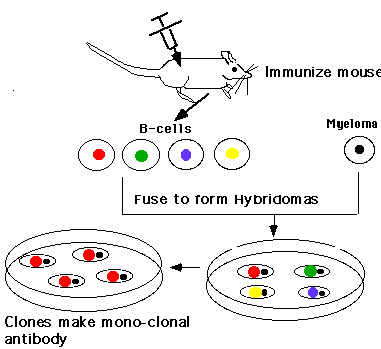

|
Tutorial to help you answer the question:
Monoclonal antibodies come from clones of B cells that produce
a single antibody of known specificity. B cells will nor normally
divide in the absence of antibody. The special trick that allowed
monoclonal antibody-producing cells to be grown in culture was:
| A. |
Mice
were immunized with antigen and T cells removed and grown
in culture to produce antibody |
| B. |
Mice were injected with antigen and B
cells were fused with cancer cells, producing a hybrid cell
line that can grow in culture yet still produce antibody against
the antigen |
| C. |
Antibodies were produced by isolating mRNA from immunized
mice and translating the message for antibody in the laboratory |
| D. |
Macrophages were isolated from immunized mice that would
stimulate na•ve B cells to continue to divide in culture,
allowing the production of monoclonal antibodies |
Tutorial
Within the body B cells are signalled to divide only after they
bind antigen. Additionally, B cells will not normally grow in culture.
In the mid 1970's, scientists discovered a method for producing
unlimited amounts of a single antibody.
Hybridoma producing monoclonal antibody
|  |
| Mice are immunized with an antigen, and B cells isolated
from the blood. These cells are fused with cancer cells which
grow continuously. Hybrid cells produce the antibody of the
B cell, but can now grow in culture. The cells can be cloned
or grown from single colonies and screened for specific antibody.
Antibodies produced from these "hybridomas" are very useful
in biology and medicine. |
|